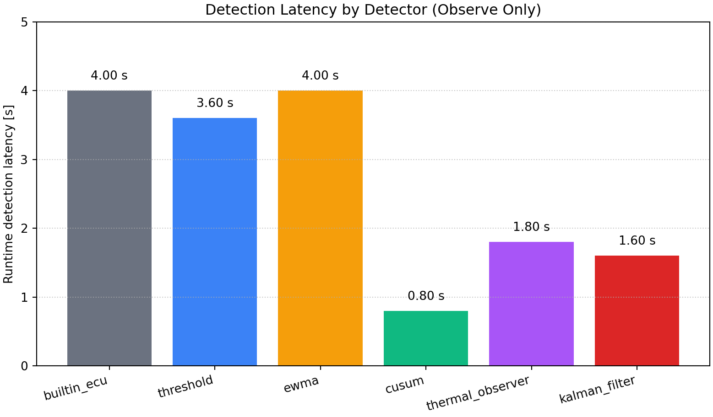
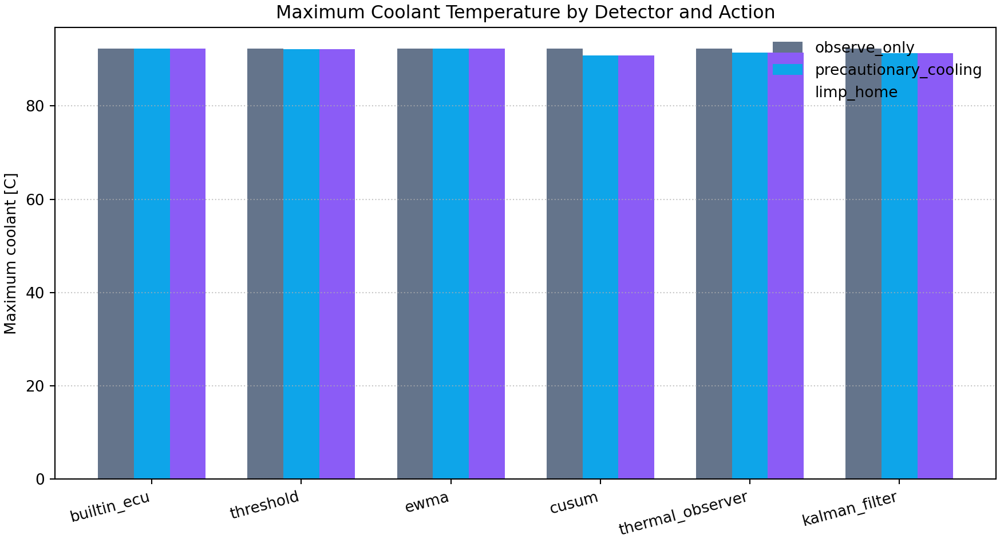
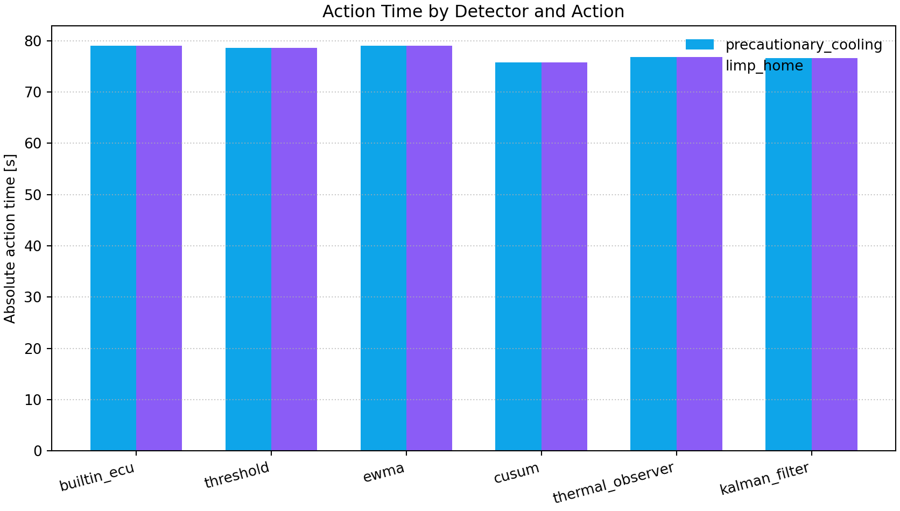
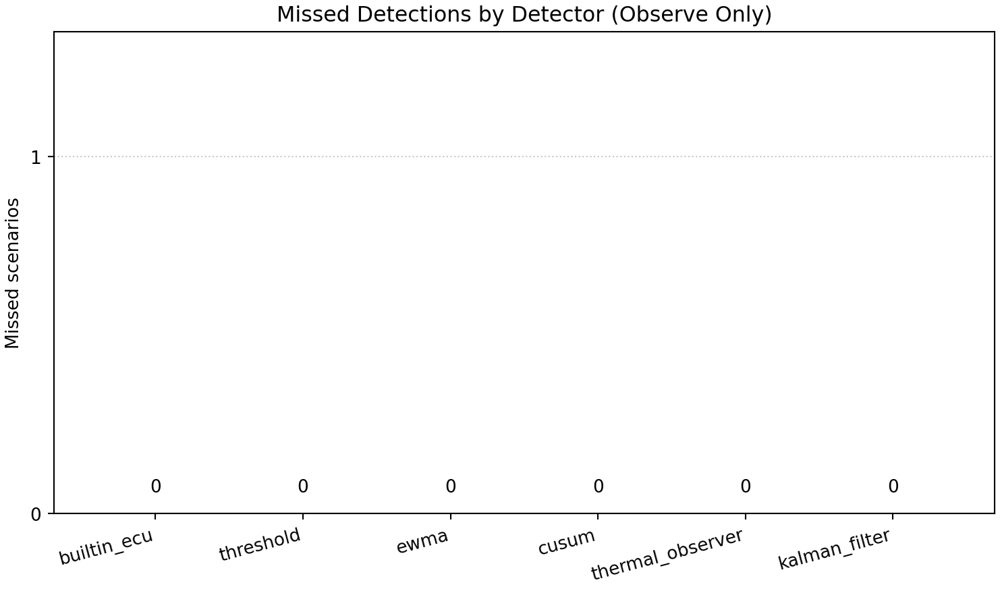

Runtime Custom Scenario Matrix
This virtual ECU research simulator study evaluates one custom scenario across
six runtime detectors and three detector actions. Runtime detectors run inside
the C simulation loop. Detector actions are optional research interventions;
observe_only preserves baseline behavior.
ScenarioCustom Kalman Fan Test
Runs18
Detectors6
Action modes3
Fastest detectorcusum (800.0 ms)
Lowest mean max coolantprecautionary_cooling / limp_home (91.71 C)
Scenario
Custom Kalman Fan Test
(custom_kalman_fan_test)
| # | Fault | Start [ms] | Duration [ms] | Behavior | Parameter |
|---|---|---|---|---|---|
| 1 | fan_stuck_off | 75000 | 0 | permanent | 0 |
Key Findings
- Fastest detected runtime response: cusum at 800.0 ms.
- Lowest descriptive mean maximum coolant: precautionary_cooling / limp_home at 91.71 C (-0.54 C versus observe_only).
- Missed observe-only detection: none.
- Active detector actions changed the final safe-state outcome in 0 of 12 intervention runs.
- Observe-only preserves the virtual ECU simulator's built-in safety behavior.
Figures




Main Comparison Table
| Scenario | Detector | Action | Detected | Runtime latency [ms] | Action request | Action time [ms] | First ECU DTC | ECU latency [ms] | Final state | Max coolant [C] | Shutdown |
|---|---|---|---|---|---|---|---|---|---|---|---|
| Custom Kalman Fan Test | builtin_ecu | observe_only | 1 | 4000 | none | n/a | fan_tracking_fault | 4000 | limp_home | 92.25 | 0 |
| Custom Kalman Fan Test | builtin_ecu | precautionary_cooling | 1 | 4000 | precautionary_cooling | 79000 | fan_tracking_fault | 4000 | limp_home | 92.25 | 0 |
| Custom Kalman Fan Test | builtin_ecu | limp_home | 1 | 4000 | limp_home | 79000 | fan_tracking_fault | 4000 | limp_home | 92.25 | 0 |
| Custom Kalman Fan Test | threshold | observe_only | 1 | 3600 | none | n/a | fan_tracking_fault | 4000 | limp_home | 92.25 | 0 |
| Custom Kalman Fan Test | threshold | precautionary_cooling | 1 | 3600 | precautionary_cooling | 78600 | fan_tracking_fault | 4000 | limp_home | 92.13 | 0 |
| Custom Kalman Fan Test | threshold | limp_home | 1 | 3600 | limp_home | 78600 | fan_tracking_fault | 4000 | limp_home | 92.13 | 0 |
| Custom Kalman Fan Test | ewma | observe_only | 1 | 4000 | none | n/a | fan_tracking_fault | 4000 | limp_home | 92.25 | 0 |
| Custom Kalman Fan Test | ewma | precautionary_cooling | 1 | 4000 | precautionary_cooling | 79000 | fan_tracking_fault | 4000 | limp_home | 92.25 | 0 |
| Custom Kalman Fan Test | ewma | limp_home | 1 | 4000 | limp_home | 79000 | fan_tracking_fault | 4000 | limp_home | 92.25 | 0 |
| Custom Kalman Fan Test | cusum | observe_only | 1 | 800 | none | n/a | fan_tracking_fault | 4000 | limp_home | 92.25 | 0 |
| Custom Kalman Fan Test | cusum | precautionary_cooling | 1 | 800 | precautionary_cooling | 75800 | fan_tracking_fault | 1000 | limp_home | 90.87 | 0 |
| Custom Kalman Fan Test | cusum | limp_home | 1 | 800 | limp_home | 75800 | fan_tracking_fault | 1000 | limp_home | 90.87 | 0 |
| Custom Kalman Fan Test | thermal_observer | observe_only | 1 | 1800 | none | n/a | fan_tracking_fault | 4000 | limp_home | 92.25 | 0 |
| Custom Kalman Fan Test | thermal_observer | precautionary_cooling | 1 | 1800 | precautionary_cooling | 76800 | fan_tracking_fault | 2000 | limp_home | 91.43 | 0 |
| Custom Kalman Fan Test | thermal_observer | limp_home | 1 | 1800 | limp_home | 76800 | fan_tracking_fault | 2000 | limp_home | 91.43 | 0 |
| Custom Kalman Fan Test | kalman_filter | observe_only | 1 | 1600 | none | n/a | fan_tracking_fault | 4000 | limp_home | 92.25 | 0 |
| Custom Kalman Fan Test | kalman_filter | precautionary_cooling | 1 | 1600 | precautionary_cooling | 76600 | fan_tracking_fault | 2000 | limp_home | 91.33 | 0 |
| Custom Kalman Fan Test | kalman_filter | limp_home | 1 | 1600 | limp_home | 76600 | fan_tracking_fault | 2000 | limp_home | 91.33 | 0 |
Limitations
These are deterministic outcomes from a
virtual ECU research simulator for one configured scenario. This is not production
ECU validation or real-vehicle validation. Simplified plant dynamics, detector
calibration, and scenario selection limit generalization.
Reproduction
Use Run Matrix for Latest Custom Scenario on the GUI Runtime Study page. The command is assembled from the latest normalized custom scenario configuration.